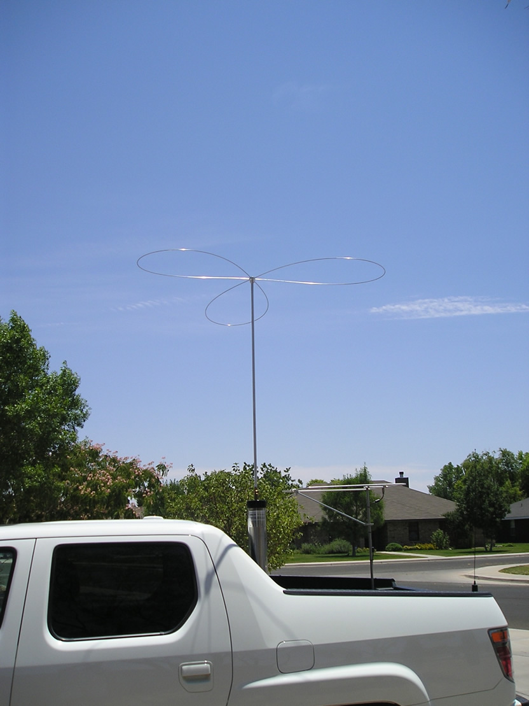
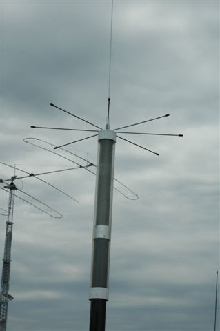
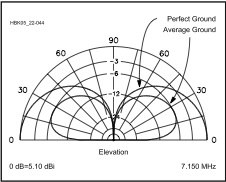
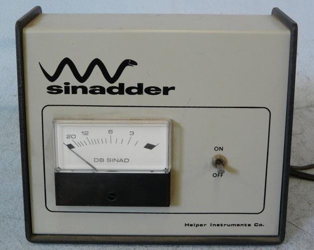
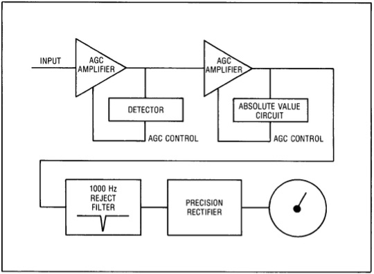

Introduction
In the April 1960 issue of QST was a short blurb on page 57 about the second annual California Mobilecade and Field Trials, to be held in San Luis Obispo. These were the first antenna shootouts of record.
The rules make very interesting reading. One standout: the receiving antenna was to be located 4,900 feet away, with additional stations 10 to 100 miles away used to verify the closer-in measurements. Keep this fact in mind — it will matter when evaluating modern shootout methodology. Further, the rules required entrants to use the same antenna setup they arrived with. The antenna in question must be road-worthy.

Basics
What really counts more than antenna efficiency alone is the overall performance of the antenna as a system. The antenna's basic design, mounting style and location, and even the way it is wired all affect performance. Unfortunately, very little thought goes into antenna performance at purchase time.
Mobile HF antennas come with a variety of coil sizes, overall lengths, coil and mast diameters, and different positions for the coil within the antenna. These factors affect how the RF current is distributed over the length of the antenna, which directly determines the radiation resistance (Rr).

The optimum coil position (for maximum efficiency for any given installation) is directly related to how much ground loss there is, and to a lesser degree the coil's Q factor. Since ground loss is the largest factor in the efficiency equation, keeping it as low as possible is paramount. The best mounting location is the one with the most metal mass directly under the antenna — what's alongside doesn't count.
Several critical points: Ground losses aren't easy to calculate and cannot be directly measured, although they are part of the input impedance. Coil Q cannot be measured when the coil is mounted within the antenna. Radiation resistance (Rr) is unknown with certainty, though we know it follows the square-law rule — a 9-foot antenna will have twice the Rr of a 6-foot one, all else being equal.
The Variables
Ground loss is the largest contributing factor in the efficiency equation. While bonding helps, mounting position is more important. Low mounting (trailer hitch, for example) forces more return current through the lossy surface under the vehicle rather than through the less-lossy body of the vehicle.
The second most important factor is coil Q. Large end caps and metal shorting plungers exhibit more distributed capacitance, lowering the self-resonant frequency and increasing Q losses as operating frequency increases. A 3-inch diameter coil, wound with #10 gauge wire, spaced 6 turns per inch, will have the most consistent (highest average) Q across 80 through 10 meters.


Cap hats are a mixed bag, especially if they're not mounted correctly. They increase wind loading, requiring sturdy antenna construction — which is why some users incorrectly mount them close to or atop the coil. The optimum position is always at the very top of the antenna structure.
The basic design of the cap hat is also important. Straight wires without an enclosing rim are a poor design. Empirical and theoretical analysis both show the most efficient design versus wind loading is the three-loop design.

Mobile antennas are seldom mounted dead center of the roof. Even if they were, the radiation pattern would still be distorted. Mounted on the left rear (as is usual in the USA), the pattern is even more distorted. The 360-degree average difference in signal strength is approximately 3 dB, possibly more on van and SUV type vehicles. Notably, the greatest field strength isn't always toward the greater mass of the vehicle, particularly on vans and SUVs.
Measurement Methodology Variables
There are variables we can't control that must be acknowledged. The methodology used to determine field strength is the first. Usually, a small receiving loop is attached to a digital voltmeter. Where it is in relation to the antenna under test, how far away, and how high above the ground all affect the detected RF voltage level.
Ideally, the vehicle should be oriented so the strongest lobe is toward the receiving antenna. While assumed to be toward the most metal mass, that isn't always the case. The distance from the antenna under test should be at least 5 wavelengths (approximately 1,200 feet) on 20 meters — well into the far field — which is seldom the case at most shootout venues. The receiving loop's height above ground should be at least 1/4 wavelength (approximately 60 feet on 20 meters). If it isn't, nearby objects and measurement personnel will affect the received strength.
How the test signal is generated matters too. The test transmitter should be self-contained and on-board the vehicle. Transmitters with coax cables running to an off-vehicle source are suspect, as the coax acts like a single radial highly affected by its surroundings.
As a standard rule, participants must use a road-worthy antenna — the one they drove to the testing site with (13.5 feet or less above ground), without any additional on-site attachments such as radial wires or trailer-hitch-mounted platforms.
Winning Strategies
The hints below are born out of the winning entrants of a number of antenna shootouts, and are not necessarily personal recommendations.
- Mount your antenna with as much metal mass directly under the antenna as possible. This is why pickup trucks with the antenna mounted in the center of the bed are consistent winners.
- Forget huge coils, especially ones with large metal end caps. The optimum coil size is approximately 3 inches, wound with at least #12 wire.
- Use a large, properly mounted cap hat, as large as shootout rules allow. Forget about birdcage designs that increase shunt capacitance — they are consistent losers.
- Bonding is important, and you almost can't do too much. However, running ground straps hither and yon to lower ground losses will not replace proper mounting.
- Know which direction to orient your vehicle to maximize the signal strength at the receiving site. That is typically toward the greatest mass, but not always.
- Properly match your antenna to minimize coax cable losses. Every fraction of a dB counts.
- When the measurement is being carried out, either stay in your vehicle with the doors closed, or stay away from it as far as practical. Your body will affect the measurement.
No winning strategy would be complete without what not to do:
- Clip-mounted antennas will always be at the bottom of the listings. Always.
- Any antenna that doesn't require matching (SWR less than 1.6:1 at resonance) will be at the bottom of the listings. Short, stubby ones for example.
- The larger the end caps, the lower the standing.
- Coils larger than 3.5 inches in diameter perform poorly, especially on 40 and 20 meter test frequencies.
- Antennas that use shorting bars or flying leads have lower coil Qs, hence lower score standings.
- If you lose, don't blame the shootout personnel for your loss.
A Better Strategy
From a personal standpoint — antenna shootouts leave a lot to be desired. While they test the transmit signal strength of an installation, there are too many variables left untested and in doubt. Not least among these are changes in local ambient conditions that highly affect overall system losses.
There is a better way, and that is measuring the Signal-to-Noise Ratio (SNR). Included then would be a specific installation's RFI suppression, receiver sensitivity, coax losses, mounting losses, and more. The point is, it doesn't make much difference if the other station can hear you, if you can't hear them.

One way to measure SNR comparatively requires a Sinadder (distortion analyzer). Although meant for commercial FM transceivers (SINAD = Signal To Noise Ratio + Distortion), it is also usable for SSB. A steady signal source is needed: a transceiver running very low power (approximately 1 watt) into a dummy load, an antenna analyzer, a service monitor, or WWV/CHU Canada. Connect the Sinadder input to the audio output of the transceiver. Turn off the AGC, back off the RF gain control. Turn on the Sinadder and bring up the RF gain until the meter just comes off full scale. Then adjust the VFO to beat with the signal source until the Sinadder shows the lowest reading — this occurs when the receiving heterodyne is right at 1 kHz. Depending on the instrumentation, accuracy can be within a few tenths of a dB.

For those comparing mobile installations using this method — exhaust bonding in place or not; noise blanker on or off; ferrite chokes in place or not — several scenarios will bring transmit antenna tests into question. This method will detect changes in SNR of 0.5 dB or less. For example, simply placing your hand on the vehicle can change the reading significantly. Walking between the signal source and the receiving antenna will do the same. Physically touching the antenna may change the SNR by 15 dB or more. Even local ambient conditions — temperature, humidity, people moving around, extraneous RFI sources, even cell phones in some cases — all affect the readings.
Antennas follow the law of reciprocity — any gain or loss they exhibit will be equal on transmit and receive. However, antenna performance is not reciprocal in the real-world sense, due to the enormous number of variables present. The more variables present, the less accurate the measurement. Think about these variables the next time you're at a shootout or reading a comparison report online.
Modern Considerations
Online antenna comparison videos have largely supplanted formal organized shootouts as the primary way operators compare antennas. These are even less rigorous than the already-problematic formal shootouts, and most fail on nearly every criterion described in this article: the receiving antenna is far too close and far too low, the vehicle orientation is arbitrary, the signal source may be off-board via coax, and uncontrolled variables like nearby structures and people are accepted without comment.
View these videos with the following checklist in mind:
- Is the receiving antenna at least 1,200 feet away (on 20 meters)? Almost certainly not.
- Is the receiving antenna at least 60 feet above ground? Almost certainly not.
- Is the signal source self-contained on-board the test vehicle? Not always.
- Is the vehicle orientation documented and optimized toward the receiving antenna? Rarely.
- Are the antennas being compared mounted identically (same location, same vehicle)? Sometimes, but often not.
- Are all antennas properly matched? Not if the presenter is comparing SWR rather than measured radiated power.
A comparison that answers "yes" to all six of these questions is worth watching carefully. A comparison that answers "no" to any of them produces data that cannot be meaningfully interpreted. This does not mean the comparison is useless — it may still illustrate qualitative differences — but treat the numbers as suggestive rather than definitive.
The SNR method using a Sinadder (or a modern equivalent such as a calibrated service monitor) remains the most information-rich way to compare mobile installations, and it has the significant advantage of measuring receive performance rather than just transmit. In a mobile HF station, your ability to hear the other station matters just as much as your ability to be heard.